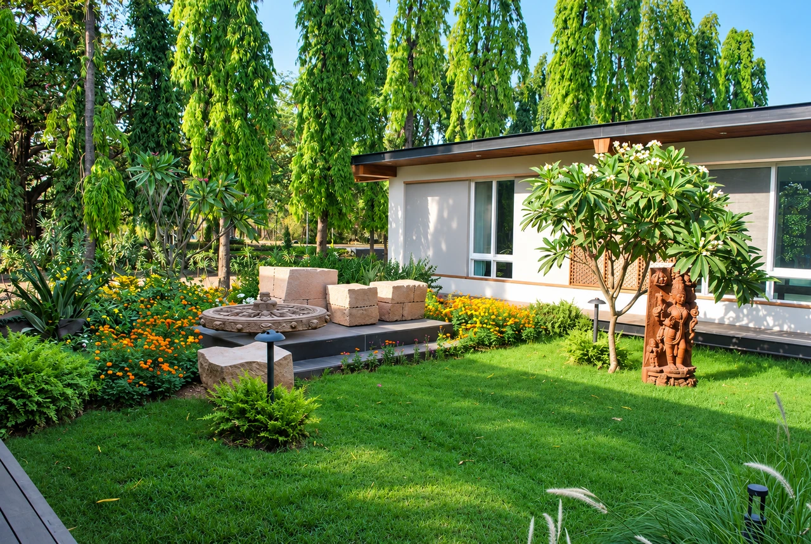
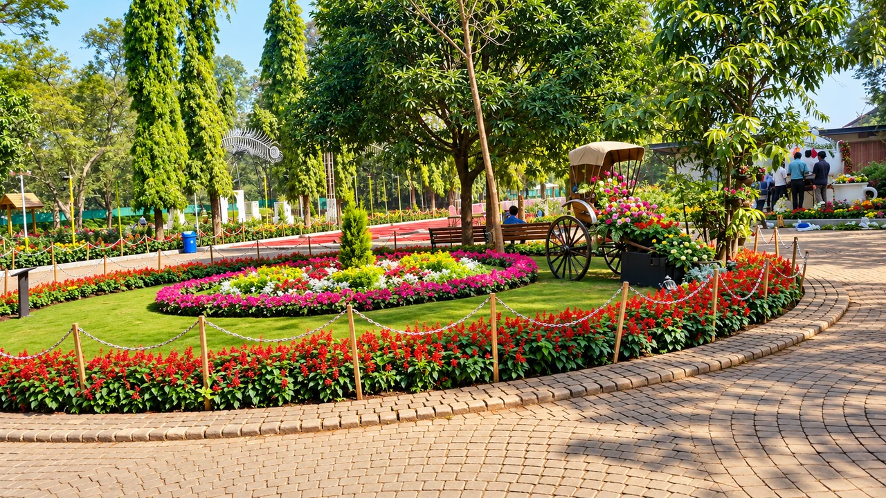
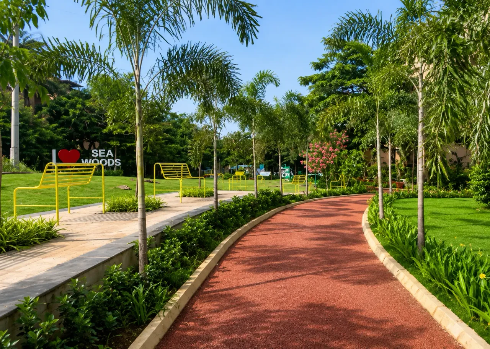
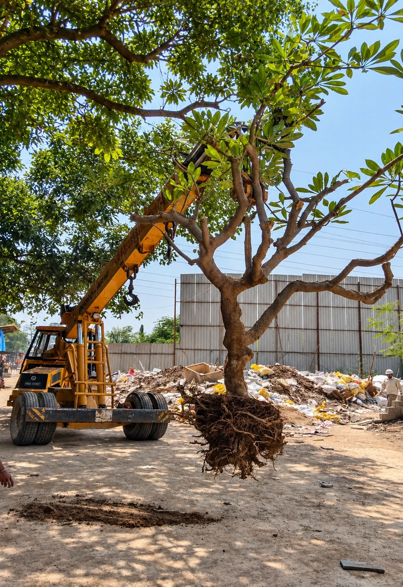

Piramal Vaikunth
Landscape development for Piramal Realty’s Vaikunth project covering hardscape, softscape, irrigation and maintenance.
View project
Regular upkeep of lawns, plants, gardens and landscaped areas.

A garden needs continuous care to remain healthy and presentable. Our gardening services cover the regular upkeep of landscaped areas, plantation care, pruning, lawn care, cleaning and general garden maintenance.
Our horticulturists and trained gardening teams develop a maintenance plan around the type of landscape, the plant species and the site, and offer annual maintenance contracts (AMC) to keep landscapes in good condition throughout the year.
We assess the landscape, identify requirements and prepare a maintenance schedule.
Mowing, pruning, watering, cleaning and fertilisation follow seasonal requirements.
Regular monitoring and timely treatment for pests, diseases and deficiencies.
Irrigation is checked so water is distributed efficiently.
Seasonal flowering plants and replacements keep the garden vibrant.
Our maintenance services suit private gardens as well as large commercial landscapes.
Regular care promotes healthy plant growth, keeps lawns and gardens presentable, helps catch pests and diseases early and protects the investment made in the landscape.




Landscape development for Piramal Realty’s Vaikunth project covering hardscape, softscape, irrigation and maintenance.
View project
A municipal garden with a red EPDM walking path, kerb-edged planting, a colourful seating platform, lawns and palms.
View project

